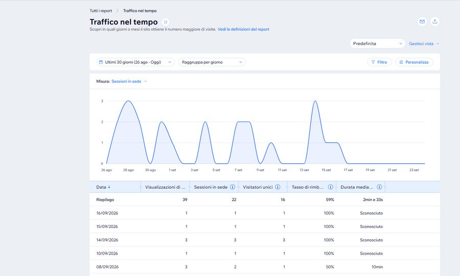

Come, insieme al mio socio Luigi Rigolio, aiutiamo le piccole e medie imprese italiane a vedere davvero come lavorano — e a togliere attrito dai processi prima ancora di parlare di software.
Molte PMI italiane non hanno un problema di strumenti: hanno un problema di processo. Ordini gestiti a metà su un gestionale e a metà su fogli Excel paralleli, informazioni che passano a voce da un ufficio all'altro, workaround manuali diventati "normalità" col tempo. Il risultato è una complessità di coordinamento che nessun organigramma riesce a mostrare, perché vive nelle abitudini quotidiane delle persone, non nelle procedure scritte.
Il management vede l'organigramma. Non vede il flusso reale di un ordine dal momento in cui arriva a quello in cui viene fatturato — con tutte le deviazioni, i doppi controlli e le eccezioni che nel frattempo sono diventate prassi.
Andiamo a vedere il lavoro reale, non la sua rappresentazione formale. Mappiamo il flusso effettivo, individuiamo dove si perde tempo o si introducono errori, e misuriamo la complessità con criteri oggettivi invece che con impressioni.
"Non vendiamo né installiamo software: sviluppiamo l'efficienza."
Il sito cartaforbicesasso.it è online e genera traffico reale nel tempo — un segnale, per chi valuta questo lavoro, che non si tratta di un esercizio teorico ma di un'attività che porto avanti concretamente.

Questo progetto rappresenta il cuore di quello che so fare: leggere un'azienda per come funziona davvero, non per come è disegnata sulla carta. È l'esperienza che porto anche quando il lavoro si sposta sul digitale — un e-commerce, un sito, un flusso di dati — perché la domanda di partenza resta sempre la stessa: dove nasce davvero l'attrito, e cosa possiamo togliere?